Se pot insera note de subsol la nivel de pagină (Footnote) şi note de subsol la nivel de document (Endnote):
- Pentru a insera o notă de subsol la nivel de pagină, selectăm cuvântul pe care vrem să îl comentăm.
Pe fila Referințe (References) în grupul Note de subsol(Footnotes) vom apăsa butonul Inseraţi notă de subsol(Insert Footnote)
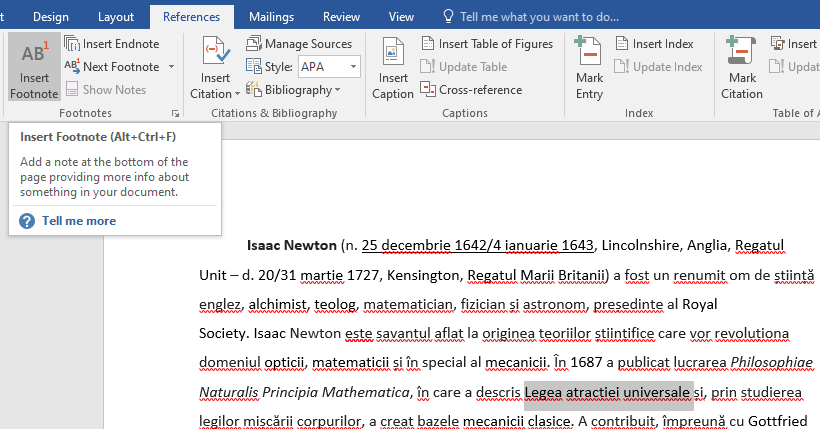
se inserează nota de subsol dorită:
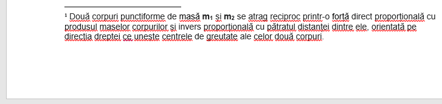 -
Dacă vom ţine mouse-ul în dreptul cuvântului căruia i-am făcut referire la o notă de subsol, putem observa într-un tooltip ce text se regăseşte în nota de subsol:
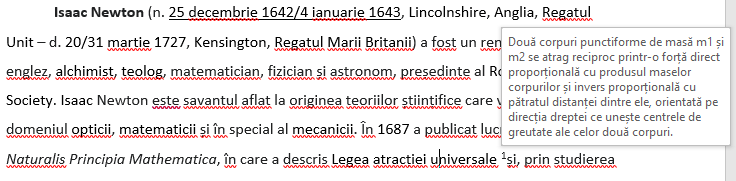 - Pentru inserarea unei note de subsol la nivel de document se va apăsa butonul Introduceţi notă de final(Insert Endnote).
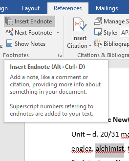
Această notă va apărea la sfârşitul documentului, iar numerotarea ei se va face automat cu litere.
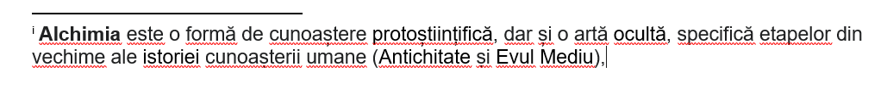 - Pentru a naviga între notele de subsol, putem apăsa butonul Afișați note(Show Notes) pentru a merge fie la Vezi note de final(View endnote area) fie la Vezi note de subsol(View footnote area).

Când aveți un document Microsoft Word lung și trebuie să vă întoarceți la anumite locații din document mai târziu pentru editare marcajele sunt foarte utile. În loc să derulați pagină după pagină documentul, puteți reveni rapid la locațiile marcate pentru a vă relua activitatea.
Poziționați cursorul la un punct de inserare pe care doriți să îl marcați sau selectați o secțiune de text sau o imagine.
Pe fila Inserare (Insert) în grupul Legături(Links)
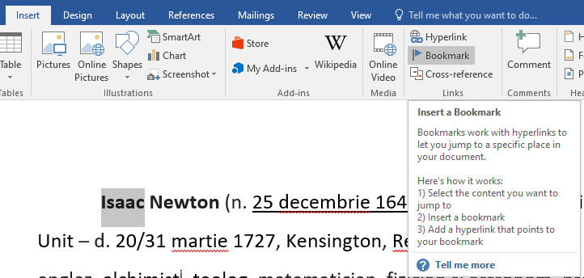
Selectați "Bookmark" în secțiunea Legături pentru a deschide caseta de dialog Bookmark
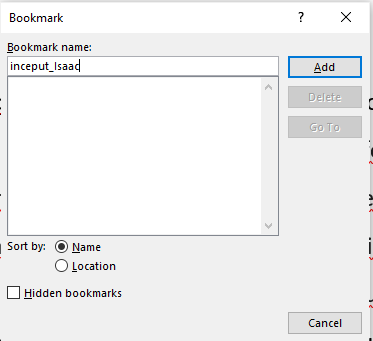
În caseta "Nume", introduceți un nume pentru marcaj. Trebuie să înceapă cu o literă și să nu poată conține spații, dar puteți utiliza caracterul de subliniere pentru a separa cuvintele. Dacă intenționați să introduceți mai multe marcaje, faceți numele suficient de descriptiv pentru a fi ușor de recunoscut.Apoi faceți clic pe Adăugați(Add) pentru a plasa marcajul.
- Microsoft Word nu afișează marcajele în mod implicit. Pentru a vedea marcajele din document, trebuie să:
- Faceţi clic pe Fișier(File) și apoi clic pe Opțiuni(Options).
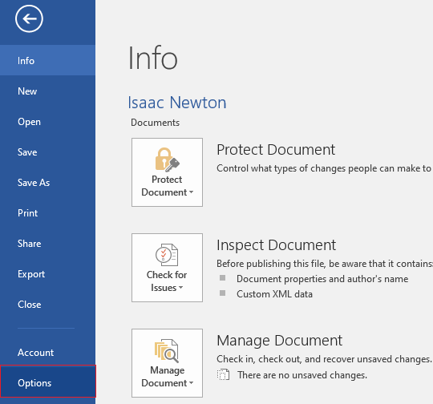 - Selectați Avansat(Advanced) apoi bifați caseta de lângă Afișați marcajele(Show bookmarks) din secțiunea Afișare conținut documente(Show documents content)
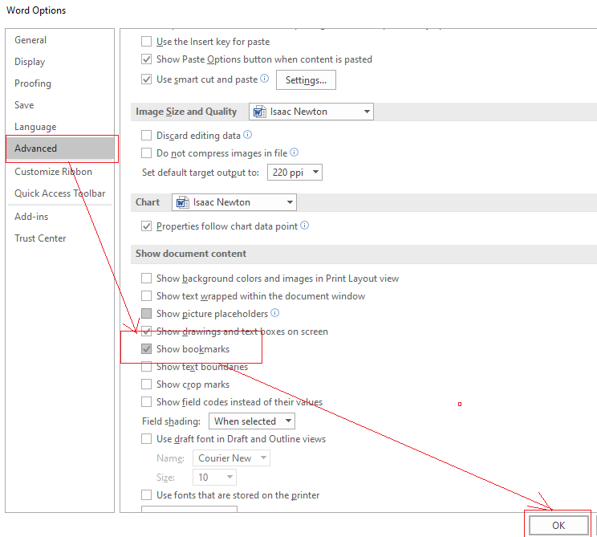 - Textul sau imaginea marcată trebuie să apară acum în paranteze în document.
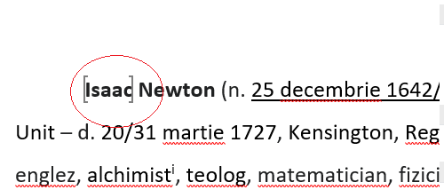
- Selectați textul sau imaginea care doriți să se afișeze ca hyperlink,
- În fila Inserare (Insert) în grupul Legături(Links) faceţi clic pe Legături (Hyperlinks)
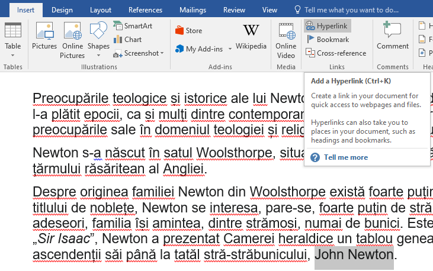 - şi în fereastra care apare selectaţi Plasare în acest document(Place in This Document),
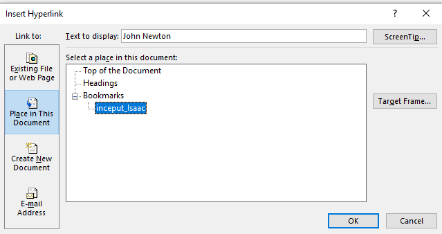 - În listă, selectați titlul (doar documentul curent), titlul marcajul în document(Bookmarks) la care doriți să creați legătura,
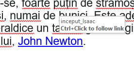
- Selectați textul sau imaginea care doriți să se afișeze ca hyperlink,
- În fila Inserare (Insert) în grupul Legături(Links) faceţi clic pe Legături (Hyperlinks)
- şi în fereastra care apare selectaţi Fișier sau pagină Web care există(Existing File or Web Page),
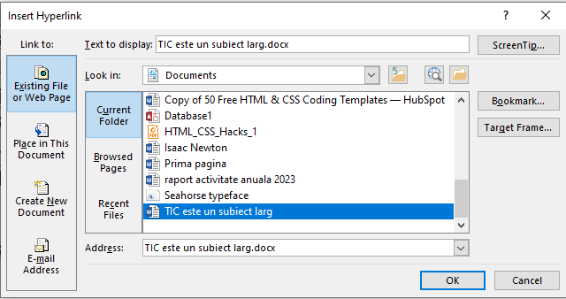 - În caseta Căutare în(Look in), faceți clic pe Folder current(Current Folder), şi căutați fișierul la care doriți să creați linkul și selectați-l.
- Click pe OK şi se creează link-ul.
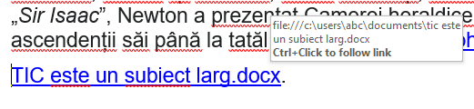
- Selectați textul sau imaginea care doriți să se afișeze ca hyperlink,
- În fila Inserare (Insert) în grupul Legături(Links) faceţi clic pe Legături (Hyperlinks)
- şi în fereastra care apare selectaţi Fișier sau pagină Web care există(Existing File or Web Page),
- În caseta Căutare în(Look in), faceți clic pe Folder current(Current Folder), şi căutați fișierul la care doriți să creați linkul și selectați-l.
- Click pe Marcaje(Bookmarks) şi se selectaţi o locaţie din documentul selectat.
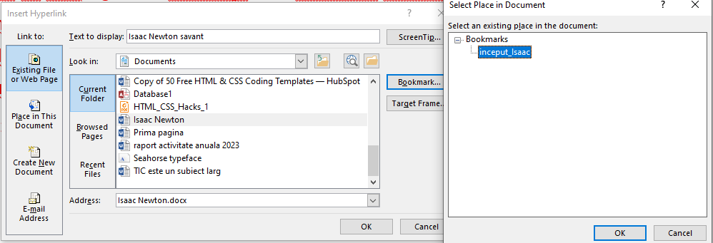 - Click pe OK şi se creează link-ul.
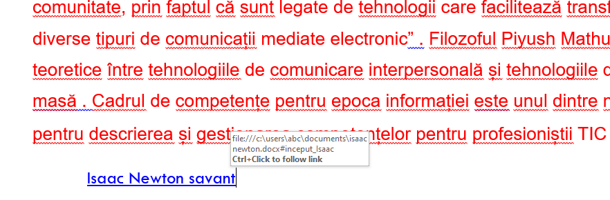
Casetele de text vă oferă controlul asupra poziției unui bloc de text în document. Puteți plasa casetele de text oriunde în document și le puteți formata cu umbre și margini. Conținutul casetei de text poate fi formatat ca orice alt text din document. Puteți aplica formatarea de caractere și paragrafe și puteți utiliza stiluri folosind instrumentele din fila Format.
- În fila Inserare (Insert) în grupul Text(Text) faceţi clic pe Caseta text (Text Box)
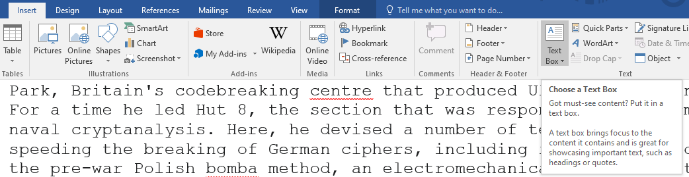 - şi în fereastra care apare selectaţi o casetă de text predefinită sau desenaţi una nouă,
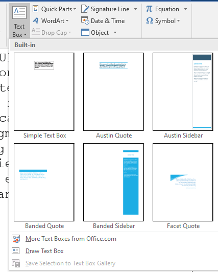 - Caseta text apare cu o margine subțire și vă oferă "mânere" de utilizat pentru redimensionarea sau repoziționarea casetei de text.
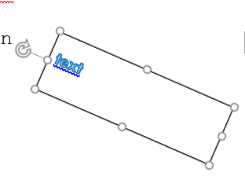
Pe fila Inserare (Insert) în grupul Ilustrații(Illustrations) faceți clic pe Forme(Shapes):
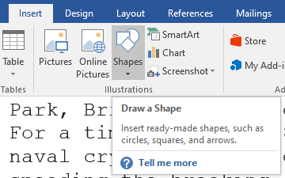
şi din listă se poate alege forma dorită:
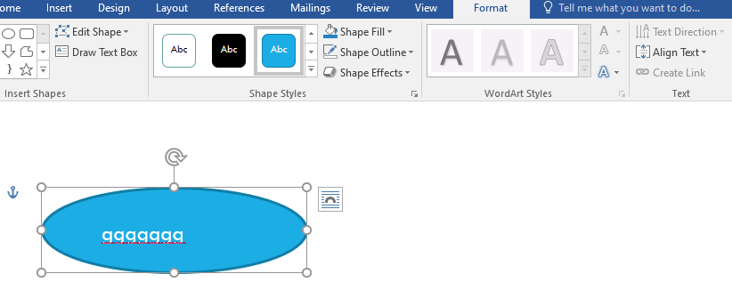
Fila Format apare după ce inserați o formă desenată.
- Lansaţi procesorul de text Microsoft Word
- Pentru margini alegeţi formatarea predefinită Normal din listă
- Inseraţi antetul şi subsolul care au fost salvaţi în galerie la Fișa 1;
- Scrieţi titlul ŢĂRI DIN EUROPA cu font Courier New, mărime 18, culoare roşie(red), subliniat cu linie dublă, centrat
- Din pagina Austria copiaţi în prima pagină primele patru paragrafe. Indentaţi prima linie din fiecare paragraf. Inseraţi note de subsol la nivel de pagină (Footnote) pentru cuvintele constituţie şi democraţie. Aliniaţi paragrafele la stânga, text de culoare verde, Arial, mărimea 14.
- Din pagina Franţa copiaţi în a doua pagină primele patru paragrafe. Inseraţi note de subsol la nivel de pagină (Footnote) pentru cuvintele catolici şi protestanți. Aliniaţi paragrafele la centru, text de culoare albastră, Verdana, mărimea 12.
- Din pagina Spania copiaţi în a treia pagină primele patru paragrafe. Inseraţi note de subsol la nivel de pagină (Footnote) pentru cuvintele migrație şi colonizare. Aliniaţi paragrafele la dreapta, text de culoare roşie, Times New Roman, mărimea 16.
- Inseraţi note de subsol la nivel de document(Endnote) pentru textul climă temperată şi Cordoba
- Inseraţi o imagine de fundal(Watermark) cu steagul Uniunii europene.
- Inseraţi marcaje la primul cuvânt de pe fiecare pagină.
- Vizualizaţi marcajele.
- La sfârşitul documentului inseraţi câte o legătură la fiecare marcaj.
- Inseraţi un chenar de pagină la alegere.
- Inseraţi numere de pagină.
- Salvaţi documentul cu numele 'TARI EUROPENE.docx'.
- Creaţi un nou document Word cu numele 'UNIUNEA EUROPEANA.docx' în care copiaţi în prima pagină primele trei paragrafe despre Uniunea Europeană. Alinierea textului să fie justify,tipul fontului Bradley Hand ITC, marimea 20. Indentaţi prima linie din fiecare paragraf.
- Inseraţi o imagine de fundal(Watermark) cu steagul Uniunii europene.
- Inseraţi un chenar de pagină la alegere.
- Inseraţi la sfârşitul documentului următoarea casetă de text(Austin Quote):
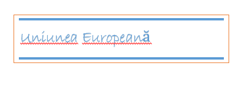.
Rotiţi caseta de text cu 45 grade în sens invers trigonometric. - Inseraţi la sfârşitul documentului următorul desen:
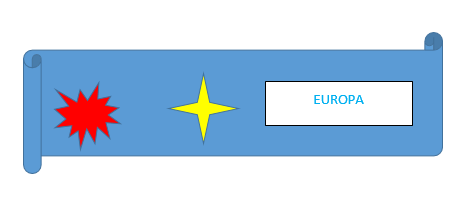
Ataşaţi acestei imagini o legătură la al doilea marcaj din documentul 'TARI EUROPENE.docx'. - Inseraţi numere de pagină.
- Salvaţi documentul.